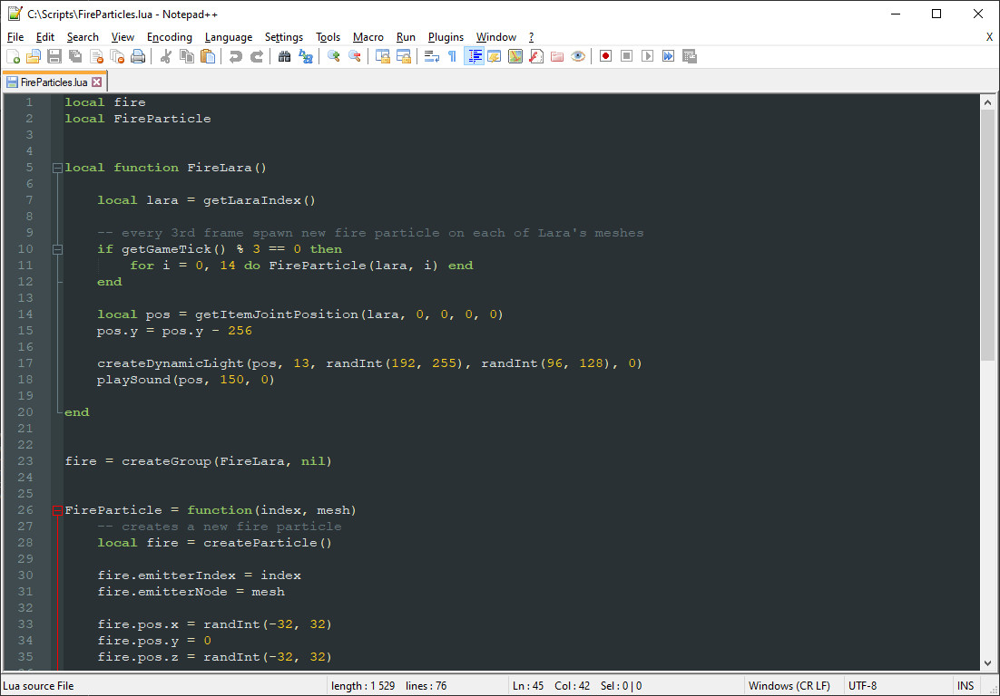

You were made aware that particle scripting involves the use of the Lua language to write code for particle effects, but you may have never heard of Lua – what it is or what it does. If that’s the case, this is the chapter for you!
Lua is a programming language used in many applications as an embedded scripting language, allowing end users to extend or modify an application’s functionality without having create a new version of the program (which would usually require recompiling the source code after making necessary changes). It found its place in many game engines with user scripting support. Among a long list of benefits, it’s a very simple first programming language and its syntax is very intuitive and fast to pick up, even for people without a computer science background. Nonetheless, it still has all features necessary for it to qualify as a true programming language, including variables, mathematical operations, flow control (conditions and loops), functions, arrays and structured data (tables).
I will do my best to give a concise rundown of Lua’s most important features to give you a head start, in case you have never come into contact with it (or any other scripting language, for that matter). Please note that this is far from a proper “Lua programming” course, as I will be only focusing on the things that are relevant to scripting within the plugin. For a detailed, in-depth introduction to Lua, please seek online resources, of which there is an abundance to choose from. Especially noteworthy is the Programming in Lua manual available on the official Lua website: https://www.lua.org/pil/contents.html
The manual at the given link is for an older version of Lua (Lua 5.0, whereas the plugin uses Lua 5.4), but it still remains relevant, especially in regards to particle scripting. I will make note of any distinctions between generic Lua programming and the scripting specifically used for this plugin, since there are a few key differences.
Finally, do not stress to memorize every bit of information presented here, as in the practical chapters I will often give a hyperlink to a relevant section on this page, alongside a contextual explanation of using a certain feature from the language. This chapter is more for you to see how Lua works and be able to go – “Oh, this rings a bell” – when a specific topic shows up later in practical code examples. You can always return here in case you need to refresh your memory about some topic, or go to the aforementioned official manual, if you would like a detailed explanation from the authors of Lua themselves.
This topic is not as much related to the Lua language itself, as it is to what you will use for writing the Lua code for your scripts.
Lua script files are text files with the .lua extension. These are ordinary text files, no different to files with the .txt extension created in Notepad, for example. There is nothing special about them apart from the file extension. As a matter of fact, you can even write your scripts in the trusty Windows Notepad and rename them by changing the default .txt file extension to .lua. While this totally works, Notepad is not really the best tool to write your scripts in.
Instead, I can personally recommend a program called Notepad++. It can be downloaded from its official website: https://notepad-plus-plus.org/
It’s an open source program that is free to download and use for any purpose. It’s like regular Notepad in that it allows to write simple text files, but it also has a bunch of extra features that make it better adjusted for writing script files. For instance, it highlights Lua syntax for .lua files, making the script color-coded and thus easier to read. It also has a far more extensive toolset for text editing and manipulation than the regular Windows Notepad, which often comes in handy. On top of that, you can pick a custom colored theme to fit your aesthetic preferences!

You can of course choose a different program for writing text files, there are countless options to pick from (e.g. VS Code is another solid choice). But whatever you do, do NOT use applications like Microsoft Word or its alternatives such as OpenOffice Writer. These are not text editors, they’re word processors. The difference is that while text editors allow to write plain, unformatted text, word processors also include formatting data about the text (font size, font style, color and so on). Which is not good for the purposes of writing script files in a language like Lua, where formatting data is not understood correctly and thus useless and even detrimental to the script file.
Simple is better, so use a plain-text editor that leaves the text formatting out of whatever you are writing.
Variables are perhaps the most important concept in all of programming. They can be seen as named containers for various types of data, which can be anything from:
numbers (this includes whole numbers and decimal fractions)
booleans (true / false)
text (strings)
more complex data comprised of other, simpler data (e.g. structures).
Variables get their name from being variable, i.e. having the possibility to change their value at any point in time. Those familiar with more advanced TRNG scripting may know about variables in the form of Global Long Alfa, Local Short Beta 2, etc. These TRNG variables are similarly understood as containers for numbers up to a certain range. Other TRNG variables like Text1 or Big Text allow to store some arbitrary text (strings).
The important distinction between variables in TRNG and Lua is that Lua can offer you a (nearly) limitless amount of variables and you can name them however you like (with some caveats, as will be explained in a bit). They can also store any data type supported by the Lua language (which goes far beyond just numbers and text).
I will give an example of creating a variable in Lua:
myfirstvar = 5
With the above line, we create a variable with the name myfirstvar , and assign to it the integer (whole number) value 5 following a singular equals sign = in between, called the assignment operator. Afterwards, by using the myfirstvar name somewhere in the script, we can get the value stored by this variable, which in this case, is the number 5. Because it’s a variable, nothing prevents you from changing the value stored by myfirstvar, you simply need to use the assignment operator once more, with a different value (the previous value stored by myfirstvar gets discarded).
Note that we could have used any name for our variable, instead of myfirstvar, as long as:
it does not contain any spaces or other whitespace characters (e.g. my var)
it does not begin with any digit characters (e.g. 123var)
it uses only alphanumeric characters (lower- and uppercase letters, digits), meaning no punctuation or symbol characters like ! , . @ # $ % ^ ( ) + - = etc. (with one exception, the underscore _ character is allowed)
it is not any one of the following lower-case, reserved keywords (uppercase versions of these words can technically be used, however this is strongly discouraged prevent mix-ups when reading the code):
We will now create another variable, this time with a decimal number value:
local pi314 = 3.14
In the above line is the creation of a variable pi314 , which holds a decimal (floating point) number 3.14 . But there is also a word before the variable name, local . What does it mean?
This is a special keyword used to make the variable we’re creating a local variable, as opposed to a global variable (which is what we would get if we wouldn’t put local in front, as was the case with myfirstvar earlier). When a variable is local, it means the memory reserved for it is temporary and its scope is limited to a specific block of code. I will explain what this means exactly in a subsequent chapter, but in a nutshell, a local variable will exist only within a specific “section” of code (in which you are allowed to access or change its value) and will cease to exist outside of that “section”. A global variable, after creation, exists more or less permanently, i.e. as long as the program is still running, and can be accessed anywhere after being created. This distinction between local and global can be approximated by an analogy to TRNG variables, with local TRNG variables clearing after each level jump (in our analogy: code section) and global variables keeping their values even after a level jump (code section). Except that with Lua, it’s more extreme. The local variables themselves vanish when outside of their section, it’s not only their values that get cleared!
It may seem like global variables are therefore superior to local ones, since they are available anywhere after being created, and you don’t need to worry about these “code sections”. However, global variables in Lua come with a big drawback – while local variables can be accessed very quickly in computer memory, global ones are comparatively very slow to access. This means that relying on global variables makes everything much slower, significantly reducing perfomance. This difference is so staggering in fact, that we (the developers of this plugin) decided to completely forbid the use of all global variables in the scripts. As drastic as this sounds, the justification is they offer no real benefit for the purposes of particle scripting, leading only to slowdowns and poor performance. Therefore, this is a very important rule you should apply to particle scripting – if you want to create variables, they can only be local variables, and thus, must have the local keyword when being created (otherwise, you will get an inevitable script error about a global variable being used). However, as we will learn over the course of these tutorials, this absence of global variables should not even be a problem to begin with, we can live without them.
One more thing to add on the topic of local variables is that we can declare local variables without assigning any value to them yet (because we want to do it later):
local myvar
As you see, we are lacking the “value assignment” portion, where we place a value after the = symbol. This is a valid thing we are allowed to do. It is used to tell Lua: “this variable has no value yet, but please treat it as a local variable for future reference”. Why we may use this strange convention will become apparent in the upcoming first chapter.
As mentioned, Lua supports various kinds of data types, not limited to just numbers or text. Here is a list of the data types relevant to particle scripting:
numbers – includes whole numbers (integers) like 0, 121 or -6 and numbers with decimals (known as floating point numbers or floats) such as -0.5 or 2.71828
booleans – one of two values: true or false, used to represent logical relations or two-valued states (e.g. true – on, false – off)
strings – sequences of text characters; strings need to be encased in single or double quotes to differentiate them from Lua code, i.e. 'This is a string' or "This is a string"
functions – executable, reusable fragments of code that can be written by the user to streamline a repetitive task or calculation
tables – containers capable of holding onto multiple other data (including other tables)
plugin data – similar to tables in concept, except their structure and contents is predetermined by the particle system plugin
nil – a unique type represented by the single value nil that is different from all other values; usually it is used to signal the absence of something or an erroneous result.
Variables in Lua can store any of these data types and can even be overwritten to store some other data type later, for example, initially storing a number, then a function, then a string and then a boolean. Be wary of this, it’s quite easy to shoot yourself in the foot and accidentally overwrite something important you’ve stored in your variables (remember, overwritten values are discarded)!
Operators are specialized, built-in symbols recognized by the Lua language, which allow to perform some operations with values (including the values contained by variables). We have already learned of one such operator, the assignment operator = used for assigning a value to a variable:
local var = 15
As it turns out, Lua has many more operators. Among them are the following:
false (both expressions must be true for logical and to be true)
logical or
or
6 == (3 * 2) or 5 < 4
true (at least one expression must be true for logical or to be true)
logical not
not
not (5 < 4)
true (the expression was false and was then negated to true)
Note that for symbolic operators (like = + - * / < >) you do not need to put spaces in between the operator and the two values, e.g. var + 5 and var+5 are syntactically equivalent, the only difference is in aesthetics. However, this is not true for the logical operators, which are keywords. In this case, the spaces are required to separate the terms, e.g. var and true. Omitting the spaces in such case either results in referencing a non-existent global variable e.g. varandtrue or will create an illegal name e.g. 5orfalse. Either way, you end up with an error. To reiterate, for symbolic operators, spaces or no spaces is a matter of preference, but for these logical operators, you must use them. In general, you must always put spaces between expressions and keywords.
Operators are used to combine existing variables and values into expressions, which result in some other form of value. The PEMDAS (Parentheses, Exponents, Multiplication, Division, Addition, Subtraction) rule of precedence applies when processing mathematical expressions like:
a^2 + b * c - d
meaning that a^2 is calculated first, then b * c, then a² gets added to the multiplication result, and finally d is subtracted as last. If necessary or to avoid confusion, use parentheses to explicitly state the order of math operations, e.g.
((a^2) + b) * (c - d)
The precedence of other operators is a niche topic, which I will not elaborate on here. If you are inquisitive, please refer to operator precedence in the official Lua manual.
Common confusion: assignment operator and equality operator
It is important to not mix up the single equals = assignment operator (for assigning values to variables) with the double equals == relational operator (which compares two values to see if they are equal).
local var = 150
The above line is the correct form of assigning the value 150 to local variable var, whereas
local var == 150
would be a syntax error. Conversely,
var == 100
will give the boolean result of comparing the equality of var with 100 (either true or false). Contrast this with:
var = 100
which would replace the value of var with 100, instead of making a comparison.
Using an assignment operator in place of an ‘equal to’ operator is a common rookie mistake. Don’t worry if you make this mistake, though, even pros get them confused sometimes. It’s easy to make this error when not paying attention to what you are typing (I’m speaking from personal experience).
Miscellaneous operators
Lua also has specialized use operators, such as the dot operator . for accessing components of structured variables (more on this later, in the section about Tables and plugin data). There is also the length operator # for obtaining the length of certain kinds of data (mainly strings and tables).
local text = "some text"
local length = #text
The variable length will contain the character length of the string stored in text (including the whitespace characters), thus its value will be 9.
Finally, there is the concatenation operator .. (two dots) which allows to join two strings into one:
local text1 = "Hello "
local text2 = "world!"
local text3 = text1 .. text2
text3 will contain the combined strings of text1 and text2, i.e. "Hello world!".
Comments are an entirely optional, but very helpful feature in any programming language. They allow to mark a portion of text to be ignored, being there only for the user to serve as an explanation or description of what some code does. Aside from that, comments can also be used to ignore a piece of code, for example, to disable it temporarily for testing purposes without removing it from the script entirely. In Lua, comments take two forms: the single-line comment and the multi-line comment.
Single-line comments start from doubled hyphen (minus) characters -- and mark whatever comes after them to be ignored for the rest of the line:
local a = 3 -- this is a comment
-- the below line of code does not get executed
-- a = 5
a = a + 1 -- a will be 4 after this executes, not 6
If you are familiar with TRNG script syntax, this double minus type of comment is the Lua equivalent of semicolon comments ; in TRNG and can be used in the same way.
The other type of comment, multi-line comments, allow to ignore a wider section of code that spans across several lines. Multi-line comments begin with a double minus and double square opening brackets, like so:
--[[
local b = 4
b = b * 15
local c = 100 – b
and end with a double minus and pair of closing square brackets:
--[[
local b = 4
b = b * 15
local c = 100 – b
--]]
This way the entire, multi-line block of code is commented out and not executed. If we add a third minus to the start of the multiline comment, then the code inside the brackets becomes uncommented, allowing us to easily toggle if this code is commented or not:
---[[
local b = 4
b = b * 15
local c = 100 – b
--]]
This is especially useful for the aformentioned reversible disabling of code when trying to test or debug something, as it provides an easy on/off toggle (add or remove the third hyphen/minus character).
In the Particle Group section of the Introduction chapter, I have said that in order to define behavior for our particle effects, we must supply functions to their group. As we will be using functions very often, it is crucial to cover them now.
I will first make a short parallel to functions as they are known in mathematics. During your education at school, you may remember dealing with functions of the form:
f(x) = x – 2
This notation means that we are defining a function f, which takes a single argument x (usually a number), and associating it with the mathematical expression x – 2. Having defined the function, we can evaluate the result for concrete values of x, for example x = 5:
f(5) = 5 – 2 = 3
Pretty simple, right? You can also have functions that take more than one argument, for example:
g(x, y) = x + y²
This defines a function g, which takes a pair of arguments (x, y), and associates the expression x + y².
In Lua, the concept behind functions is more or less the same, except functions in Lua can take any number of arguments (including no arguments at all) and these arguments do not have to be only numbers, but in fact any value that Lua recognizes (including booleans, strings, tables or even other functions). The “expressions” themselves also don’t need to be mathematical in nature, but can be viewed more generally as any kind of procedures performed with the use of the arguments given to the function (or without them, in the case of functions without arguments). Aside from that, functions in Lua do not necessarily have to result in any values (which distinguishes them from functions in the purely mathematical sense), but may simply be a repeatable sequence of instructions.
We will start off with the general syntax for a function in Lua:
local function myFunction(argument1, argument2, ..., argumentLast) -- function body here
return result_value -- optional return values
end
There’s a lot going on there, so let’s break down every part of the above syntax:
The local keyword is placed first – I will explain this in a bit
The function keyword serves to tell Lua we would like to define a function.
We would like to use the name myFunction for this function.
We open parentheses after the name (
Inside the parentheses we list all the arguments argument1, argument2, ... that will go into the function, in order, separated with commas. If the function you are defining has no arguments, you leave the parentheses empty, ().
After listing all the arguments, we close the parentheses )
Below the name and argument list is the body of the function, where we write the code performed by the function myFunction, manipulating the data of the passed arguments, doing various calculations, calling other functions and so on.
Functions can optionally return any number of values (including none) in the body. Returned values are the end result of a function. Functions can have no such result, a single result or multiple results, depending on the needs. Lua allows to return any of the available data types. Returning is indicated with the return keyword, optionally followed by the value, variable holding the value or some expression to be evaluated as a value (separated with commas if more than one value is returned).
When a return instruction is encountered in the middle of the function body, Lua exits the function at that exact spot (returning values, if present) and no remaining code from the function gets executed.
Finally, very importantly, we terminate the body of the function with the end keyword, signifying that this is where our function’s code ends. In case no values are returned, placing return before the end is not required, it is implicit in the syntax.
Armed with this knowledge, we can rewrite the previous examples for the mathematical functions f(x) and g(x, y) in Lua like so:
local function f(x)
return (x - 2)
end
local function g(x, y)
return (x + y^2)
end
Function f(x) takes one argument, x, and returns what happens to be the result of the expression (x - 2) for the given x. Function g(x, y) takes two arguments, x and y, and returns whatever the result of (x + y²) is. In both of these functions, a single number value is returned as a result (although this doesn’t need to be the case – as stated above, functions can return the desired amount of values, including none at all).
Once we have a function defined, it would be great if we could use it on specific arguments, to let the function carry out its task and/or calculate the result from the given arguments.
The act of using a function is known as calling the function. If the function takes some arguments, we call the function by passing the arguments to it.
Let’s see this calling in action, with the above examples of functions f(x) and g(x, y). Both these function return a single value. The anticipated returned value of these functions is a number, so we catch the returned result by assigning it to a local variable, for example, one named result:
-- we call the function f(x) with the argument x = 5
local result = f(5) -- f(5) returns (5 - 2) = 3, and this gets assigned to result
If we did not assign the returned value of f(5) to a variable, we would lose our result (Lua would discard it).
To call a function, we do not have to pass explict values for arguments, like 5. We can also do a call by passing a variable or expression that gives the value we want to pass as an argument:
local val = 2
local result = g(val + 1, val) -- result will be (2 + 1) + 2² = 7
When calling a function with no expected arguments, you leave the parentheses empty, like so:
local result = functionWithNoArgs() -- calling a function with no arguments and some return value
If no return values are expected from a function, you do not need any variable to catch the result (which would be nil, anyway). You can just make a call to the function as-is (while also passing the expected arguments to the function):
functionWithNoResult(argument) -- calling a function with a single argument and no return values
You may have noticed the local keyword showing up again (the same one we are using for our variables) in the definitions for functions f and g.
Lua allows functions to also be defined as local. In fact, this is the only way we can define functions when writing scripts for this plugin (this is not true for Lua in general). The need for the local keyword is a consequence of having only local variables allowed. Named functions in Lua are, in fact, disguised variables that hold a nameless function as their value, i.e.
local function MyFunction() -- body
end
is in reality just a simplified version of:
local MyFunction -- local variable MyFunction
MyFunction = function() -- assigning a function to MyFunction -- body
end
MyFunction is nothing more than the name we have chosen for a variable that holds the anonymous function we have defined in the body (the function itself is nameless, but it is stored/referenced by the local variable MyFunction, just as 5 is simply the number 5, not intrinsic to any variable, but it may be stored by a variable named MyNumber). And since all variables need to be local, the same goes for the variable MyFunction holding the function. Such “local” functions are faster to call than global ones (since local variables themselves are faster to access), so this quirk comes with its benefits.
User-defined functions and built-in functions
Functions that are written (defined) by the user are known as user-defined functions. In Lua scripts, you are free to create as many of these user-defined functions as you want, which you can use to reduce the amount of code you have to write for repetitive tasks or extensive calculations. In fact, this is one of the main purposes for which functions exist in programming languages like Lua. Some user-defined functions are even crucial to make any use of the particles, namely the init and update functions for particle groups, which as a coder, you will write by yourself.
There is another type of functions available, built-in functions, which are defined by the Particle Scripting API. The plugin’s API comes packed with a plethora of these built-in functions for various tasks and calculations. Some spare you the trouble of defining your own functions for common tasks, some perform mathematical operations, while others are a direct way to communicate with the Particle System implemented by the plugin. These built-in functions can be called, but they cannot be redefined by the user to prevent breaking them, they’re too important to be overwritten!
Conditions and loops are a form of flow control in programming languages. What this means is making decisions based on the current state (the value of some variable or a combination of variables, for example) whether to execute a part of code, which part of code to execute and / or how many times to execute the part of code. This allows code to behave in a dynamic way, reacting to the current situation and deciding what course of action to take based on certain factors.
I will now introduce the if conditional statement. It begins with the keyword if, followed by an expression that evaluates to the boolean true or false, followed by the keyword then, like so:
local var = 3 -- assign value 3 to var
if var == 3 then -- if var is equal to 3 -- make note of the distinction between = (assignment) and == (equality comparison)
After the then keyword, we can write what we want to happen if the expression results in true:
local var = 3 -- assign value 3 to var
if var == 3 then -- if var is equal to 3
var = var - 1 -- what happens when the statement was true
And finally, we must signal to Lua where this inner section of code ends, with the end keyword:
local var = 3 -- assign value 3 to var
if var == 3 then -- if var is equal to 3
var = var - 1 -- what happens when the statement was true
end -- end the if block here
Whatever is between the then and end keywords is part of a new block of code delegated to the if condition, meaning this code will only be performed if the expression between if and then evaluated to true (and under no other circumstances).
Note that these indentations and separate lines are not strictly necessary. We could have the if statement, the inner code and the end keyword all in one line, like so:
local var = 3 -- assign value 3 to var
if var == 3 then var = var – 1 end -- one-liner with condition and expression
and to Lua this is indistinguishable from the indented version (and the same is true for function indentations, by the way). Though at least for me, it is much harder to read, so I almost always prefer to structure it with indentations and on separate lines, like in the first example.
We can also have conditions where we execute a different piece of code if the condition result was false. This is achieved by placing the else keyword instead of the end after the body of the if statement (note that then does not occur after else!):
local var = 5
if var > 3 then -- if var is greater than 3
var = var - 1 -- what happens when the statement was true
else
and writing the code we want to execute when the if condition statement resulted in false, then terminating it with end:
local var = 5
if var > 3 then -- if var is greater than 3
var = var - 1 -- what happens when the statement was true
else
var = 0 -- what happens when the statement was false
end
If you guessed that this piece of code will result in the variable var receiving the value of 4, you’re absolutely right, congrats on figuring it out! Since the initial value of var is set to 5, the result of the expression (var > 3) is true. Therefore var = var – 1 will execute, so var will be assigned the value it already holds, minus one. If, on the other hand, the value of var would be e.g. 2, then the code section under else would execute, var = 0.
You can further expand these branched if-else statements and evaluate other conditions with the elseif, then keywords after the first if and the optional, final else, as many times as needed.
local var = 5
if var > 3 then -- if var is greater than 3...
var = var - 1
elseif var <= 0 then -- if previous statement was false, check this one...
var = 6
else -- if all prior statements were false...
var = 0
end
Combined and nested conditions
Sometimes, you may require a more complex condition, which checks or compares several values at once. You can combine conditional statements with the logical operators. For example, if you want to check if two different things are simultaneously true, you may use the and operator:
if var >= 0 and var < 5 then -- if var is greater or equal to 0 and smaller than 5
var = var + 1
end
The above if condition will only be true if var is greater or equal to 0 AND smaller than 5. Effectively, this allows to set a minimum-maximum range of permitted values for var.
We can also use the or operator, which allows to combine conditions in a way where only one of them needs to be true. Let’s see another example:
if var == 1 or var == 3 then -- if var is equal to 1 or equal to 3
var = -var
end
Naturally, in this case the statements cannot both be true simultaneously (since a number cannot be equal to 1 and 3 at the same time), but generally speaking, the or operator also permits the situation that both statements are true, for the whole condition to be true (i.e. it can only be false if neither of the two statements is true).
There are also scenarios which may require nested conditions – if conditions inside of other if conditions:
if var < 0 then -- if var is smaller than 0
var = -var -- negate the value of var and assign it back
if var % 2 == 0 then -- if the positive value is divisible by 2
var = var^2
end -- end inner if
end -- end outer if
Notice how there is a respective end keyword closing each if-block. Also, while not strictly necessary, adding one more indentation level for each if-block is highly recommended to improve clarity of code.
In such cases, the first encountered if condition serves as the first “gate” to be passed, after which there may be more instructions. Inside, there can be another if condition which will be yet another “gate”. You can have an arbitrary level of nesting in Lua. However, with increasing levels of nesting, the code becomes less and less readable. Prefer to minimize such nestings, if possible. For example, the following nested if condition:
if var > 3 then
if var % 3 == 0 then
var = var * 2
end
end
Can be simplified with the logical operator and:
if var > 3 and var % 3 == 0 then
var = var * 2
end
There is effectively no difference between how these two snippets behave, both will check if var > 3 AND var % 3 == 0, but in the latter case you save on one level of nesting.
When is it false, when is it true?
A small remark about what kinds of expressions evaluate to true, and which ones give a false in if statements:
In Lua, the condition result is false only if the whole expression results in one of the values: false or nil.
In all other circumstances, the result will be true: if the expression result is true, or it’s any number (even 0), any string (even empty string ""), any function or any table (even if the table is empty). This can come as a surprise to programmers experienced with different languages, as the numeric value 0, empty string "" or empty table {} may evaluate to the boolean false in some other programming languages. Such cases in Lua require explicitly checking the values, otherwise the implicit result in the condition is always true.
Now we will cover loops. Loops are another essential component of programming, they allow to execute a piece of code with repetition, a specific number of times or until a specific condition is met (or not met).
The first of those, repeating a piece of code a specified number of times, is achieved through the so-called for loop. In Lua, the general syntax of this for loop is as follows:
for var = start, stop do -- inner code of for loop
end
Allow me to walk you through what this means.
We begin with the for keyword, followed by a variable called an iteration variable (here named var), specifying a start value for the iteration variable, a stop value after a comma and finally placing the do keyword on the end of the line. Then, on a new block of code, we write the body of the loop (the code which will be executed on each iteration of the loop) and terminate it with the familiar end keyword.
Now on how this works: the loop first gives our iteration variable var the start value, then it compares var to the stop value. If it’s less or equal to stop, the first iteration of the loop body performs. After the inner code is executed once, the iteration variable var increases in value by 1. Then the comparison between var and stop is done again. If var remains smaller or equal, another iteration of the loop performs, executing the inner code. Then var gets increased by 1 again. This process will repeat as long as (var ≤ stop) remains true. Once var surpasses the stop value, no further iterations of the loop are repeated (the loop is terminated) and the script carries on with whatever instructions come after (below) the loop.
I want to emphasize a potential source of error and frustration – the iterations of the loop are not stopped until var reaches the stop of the loop, or when the break keyword is encountered within the loop (which prematurely ends further iterations of loops, check the Lua manual for more info on it). Only after the loop has terminated (by reaching the stop or encountering a break), the code placed after the loop can be resumed (this includes the plugin eventually handing back control to TRNG or tomb4.exe). If the amount of loop iterations is very large, say, in the millions, this can lead to massive slowdowns or even freezing and crashing of the game, as it mindlessly proceeds with execution until the loop is terminated one way or another, potentially exhausting memory resources and freezing the game!
This is a warning to be extra careful with what you are using as the start and stop values of a for loop and double-check if they are correct. Neither the plugin or the tomb4/TRNG engine can assist in getting you out of a lockup due to excessive iterations, respecting that you’re the boss and you know what you are doing. It’s entirely your responsibility to prevent such situations when dealing with loops, so be mindful of the start and (especially) stop points of a loop.
For loops are also not the correct method to perform iterations over some period of in-game time (for example: performing some action once a frame for several frames). This can be accomplished in a different way, there will be an example illustrating this in later chapters.
Let’s see an example scenario where the for loop could be utilized. Say you want to have a particle that explodes into a bunch of other particles, e.g. 15 of them. We could write the instruction (perhaps a function called SpawnTheParticle()) to spawn the particle 15 times in the code:
I hope you agree that this seems very inefficient and ugly. What if we have 50, 100 or 200 particles to spawn instead? It will become extremely tedious writing it out that many times over and over again. Who are we, Bart Simpson in detention?
This is the perfect opportunity for using the for loop, all we do is place that spawn instruction inside the loop body and give the appropriate start and stop values to the loop (both of which can be a standalone integer value, an integer stored in a variable or an expression with an integer result):
local count = 15
for i = 1, count do -- spawn particle however many times indicated by count
SpawnTheParticle()
end
Using i, j, k as the names of loop iteration variables is common practice across programming languages, but you may of course use some other name.
Let’s go even further with our hypothetical example, say we would want to spawn a randomized amount of particles between 20 and 40. This time we can’t get away with just typing it out several times, we are forced to use a loop here. We can store this random amount in the variable count and use its value as the stop value.
local count = RandomBetween(20, 40) -- value of count is random each time
for i = 1, count do -- spawn particle however many times indicated by count
SpawnTheParticle()
end
Simple and elegant.
What I’ve shown in the above examples is only variant of the for loop, called the numeric for loop. Lua also has another variant called the generic for loop. We will also be using it, but I will introduce it and explain how it’s different in one of the practical chapters of the tutorial. There are several situations where we will use for loops in more advanced particle scripts, such as making a particle deal splash damage to enemies caught in the blast radius of an explosion.
The remaining types of loops in Lua are the while loop and the repeat-until loop. Because both of these are less likely to be useful in particle scripting scenarios (and are even more prone to game-breaking lockups if not written with care), I will not cover them here. In case you are interested in these other loops, you may check the official Lua manual.
In Lua we can have simple variables that hold just one, single value, like a number or string.
local mynum = 42
local mytext = "cherry"
Lua also allows variables that seem to hold multiple values within them:
local myarray = {20, 30, 40} -- array-like table
local myrecords = {key1 = "apple", bkey = true, lastkey = 35} -- record table
Such data composed of other data are known as tables in Lua. We call the individual data inside the table the elements or the fields of the table.
Array-like tables
Tables can act like arrays (ordered lists), as exemplified with myarray above. To create an array-like table, after the assigment operator, we list the elements we want the table to contain, encasing them in curly brackets {} and seperating them with a comma , e.g:
local myarray = {20, 30, 40} -- array-like table
The above array-table consists of 3 elements, each with a different number value. The values of elements can be of the same data type or of different types. Lua allows to assign any value for each element, however the value nil has a special meaning and you should not normally assign it to table elements (unless done for a specific purpose, shown below).
To access the elements in these array-like tables, we write square brackets [] after the name of the table variable, and inside of these brackets, the integer index at which the element resides (you can imagine the index as the house number on the street called myarray, pointing us to where a certain value “lives”):
myarray[1] -- element 1 holds 20
myarray[2] -- element 2 holds 30
myarray[3] -- element 3 holds 40
A note for programmers coming from other languages – in Lua, indices for array tables start from 1 and NOT from 0, like in the majority of other programming langauges (which is admittedly a peculiarity of Lua that takes getting used to).
We can overwrite values of existing table elements (“evicting” the old inhabitant of the house and replacing him with someone new):
myarray[2] = "banana" -- overwrite element 2 with a new value
myarray[2] -- now holds the string "banana" instead of 30
or add new elements to the table (building a new house down the road, for a new inhabitant):
myarray[4] = false -- myarray now has 4 elements, the new one at index 4 being set to false
This process of writing an integer in square brackets after the table is called indexing a table. If you index a table with an integer for which there is no element yet, Lua will give the nil value.
myarray[5] -- nil, since we have not added a 5th element to myarray yet
myarray[5] = 16.75
myarray[5] -- now the element exists with the value 16.75
Managing table contents
It’s possible to get the number of current elements in a table by using the length operator # in front of the variable holding the table:
local num_elems = #myarray -- assign the count of myarray elements (e.g. 5) to num_elems variable
This becomes useful when you want to loop over all the elements of a table in the for loop, but the size of the table is not known in advance (because it can vary).
local num_elems = #myarray -- assign the count of myarray elements to num_elems variable
for i = 1, num_elems do -- loop going from 1 to the last element of myarray
myarray[i] = myarray[i] + i^2 -- e.g. do something to each element of myarray
end
When using the length operator, the first encountered element with the nil value is treated as the end of the table (hence why you should refrain from assigning nil to table elements or leaving gaps with no assigned values in the table).
A useful thing to know is how to add a new element to the end of an existing table. One of the ways of doing it is:
myarray[#myarray + 1] = new_value -- add new_value to myarray
If you examine the above code snippet piece by piece, you see that inside the table indexing brackets [ ], we are first using the length operator # on myarray table, which gets its current length. We then add 1 to this value (#myarray + 1). This incremented value is used to index myarray itself, effectively pointing to the next available table index after the last one. Then, we can assign some new_value to this new final element in the myarray table, appending the table with one more element.
To remove existing elements from tables, one can assign the nil value to the element (this counts as deleting it). For example, we may remove the last element of the table, again making use of the length operator. Note that assigning nil discards the original value, so if we want to keep it for further use, we must first copy it to another variable, before deleting it from the table:
local last_value = myarray[#myarray] -- preserve last element value from myarray (optional)
myarray[#myarray] = nil -- remove last element from myarray, length gets reduced by 1
Finally, it is possible to remove (clear) all contents of a table, instead of removing elements one by one. To do this, you can assign a new, empty table (an empty pair of curly brackets, {}) to the variable which holds the old table:
myarray = {} -- assign an empty table to myarray -- all previously contained elements are discarded
Clearing a table can be useful in situations where you’re using the table to store a temporary list, then discard it once you’ve finished. For example, you are keeping track of some enemies nearby a certain position and add them to a list, but discard the list afterwards, to start with an empty one next time (because the baddies have likely moved around, so you need to re-check which baddies are near the position again).
Record tables
We also have another form of tables in Lua, called record tables (similar to dictionaries or maps in other languages). This type of table is demonstrated by myrecords. Inside the curly brackets, we write what appear to be “variables”, each assigned a value, separated by commas:
local myrecords = {key1 = "apple", bkey = true, lastkey = 35} -- record table
These are not actual variables (though to some extent they do behave as such), but rather key-and-value pairs stored in the table.
In the case of these record tables, we don’t have integer indices anymore, but instead we have a key (in most cases, a string) and a value paired with that key, which can be any Lua value (except nil being a special case, in most contexts it indicates the given key does not exist in the table).
In this table arrangement, we can also refer to the key-value pairs as fields in the table. We have two ways of accessing the fields inside record tables.
One way is by using square brackets, inside of them we put the key string in quotes (single or double), for example:
myrecords["lastkey"] -- key "lastkey" holds value 35
The other way is by using the dot operator. which was alluded to in the section on operators. In this case, we omit square brackets. First we write the name of the table, then a dot (period character), then the key, without any quotes:
myrecords.lastkey -- holds 35
In my opinion, the second syntax with the dot is easier to read and less clunky. We will be using this dot operator syntax throughout the whole tutorial series, so you should get accustomed to seeing it.
We can reassign existing fields or add new fields to record tables by simply specifying the key and assigning a value to it, like so:
myrecords.bkey = false -- we overwrite the "bkey" value to false
myrecords.newkey = 4.5 -- we add a new key-value pair to the table
Nested tables
Tables can hold any data type in its fields or elements (keep in mind the special meaning of nil, though). It is worth noting that this includes referencing other tables:
local innerTable = {key1 = -5, key2 = -10}
local outerTable = {keyA = innerTable, keyB = -15}
Above we have outerTable, which holds onto the table innerTable via keyA, and an integer value under keyB. Of course, innerTable has keys and values of its own, but we can navigate to them through outerTable.
To access the innerTable in a nested structure like this, we first index outerTable with keyA:
outerTable.keyA –- this gives us innerTable
and after that we add a second dot to the chain, with the appropriate key from innerTable, to get the desired value from it:
outerTable.keyA.key2 –- we access -10 from innerTable through outerTable
Of course, in the above example we have access to the inner table through the innerTable variable too, but it is entirely possible for there to be no such variable in the first place, making outerTable the only point of entry to a table nested inside of it.
The following is more of a curiosity, but we can also make a table reference itself:
outerTable.keyC = outerTable -- outerTable refers to itself via keyC
this will permit the bizarre, but completely valid Lua syntax:
outerTable.keyB -- we get -15 from outerTable
outerTable.keyC.keyC.keyC.keyB -- we can chain any number of ".keyC" in the middle and still get -15 from outerTable
As I said, treat this as a funny little fact. We will not have a legitimate use for this in our particle scripting endevours.
Tables are very versatile data structures in Lua. They can be used to represent an ordered list of things (array-like tables) or a collection of miscellaneous data describing something (record tables). Tables can also exist in a mixed type, containing some array elements and some record fields, although this is less common – usually it is either one form or the other. We will certainly see both types of tables being used in particle scripts, especially in the later chapters.
Plugin data
The dot syntax (and its nested / chained variant) demonstrated above will also apply to another kind of structured data type we will very frequently encounter, called plugin data. This data type appears quite similar to record tables on a surface level, in that it also has “keys” and associated “values” which we may access with the dot syntax. However, the “keys” (in actuality, fields) of such plugin data are predetermined by the particle scripting API. Unlike with tables, you usually cannot add new fields to plugin data entities. On top of that, the plugin carefully restricts what can and cannot be assigned to a given field of a plugin data entity. For example, if the field can store only numbers, the plugin will forbid assigning a string, resulting in an error. Or if the field is constrained to a range of values, only the values within that range will be accepted.
This predefined data type is used to represent in Lua the internal data of the plugin’s particle system, including particles, particle groups and a couple of other data entities residing in the plugin. Each variant of plugin data has a distinct set of fields, therefore there is little reason to cover them here. Instead, the plugin data types and their fields will be introduced in the following chapters as necessary, followed with a explanations of what they do or are responsible for. The manipulation of particles and their fields will be the main focus of the upcoming first chapter, demonstrating practical scripting in the particle API. Knowing how to access fields with the dot syntax is the most important thing to take away from this section.
Note: In the Programming in Lua manual, this data type is actually called userdata, meaning any kind of data that is defined outside of the Lua language, e.g. by some external library. However, you will likely not get much out of the userdata descriptions the manual provides, since they are generic and not tailored specifically to the particle plugin’s userdata. If anything, they are only useful for those wishing to work with the C++ source code of this plugin.
We have covered the absolute essentials of the Lua programming language needed to take the first steps in particle scripting. Again, by no means is this an exhaustive demonstration of the language, as I have left out many of its aspects and features by focusing exclusively on the ones that will be useful for scripting in this plugin. If you want a more detailed explanation of any subject covered in this chapter or if you want to learn about any other features offered by Lua, please visit the official Lua manual linked in the opening paragraph at the top of this page, it will give you a more thorough explanation of what interests you.
Now that we have the basics, we are ready to begin our very first particle effect project in Chapter 1. See you there!